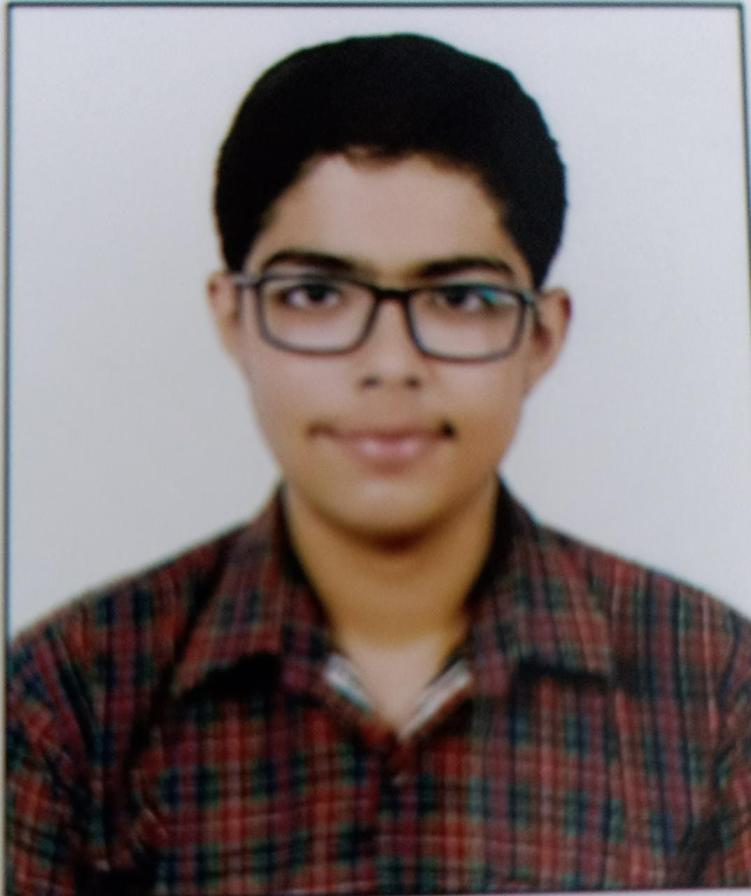

Saksham Suri

Motivated and ambitious 2nd-year Engineering student specializing in Computer Engineering at Delhi Technological University (DTU).Possessing a solid foundation in core engineering principles and a keen interest in the field of computer science, I am dedicated to gaining hands-on experience and acquiring knowledge in areas such as software development, data structures, algorithms, and computer networks.As a proactive learner, I actively seek opportunities to expand my knowledge and stay updated with the latest industry trends.Overall, I bring a strong work ethic, technical proficiency, and a passion for learning. With my dedication and enthusiasm, I am committed to making a meaningful impact in the field of computer engineering and advancing technological advancements.
Education
- Bachelor of Technology(B.Tech.), Computer Engineering- Delhi Technological University (2021-2025)
- Class 12th, Central Board of Secondary Education(CBSE)- Hansraj Model School (2021)
- Class 10th, Central Board of Secondary Education(CBSE)- Hansraj Model School (2019)
Internship Experience
- USIP Intern, Lab on Wheels Program, Center of Extension and Outreach, DTU
Apr 2023 - June 2023
- Delivered engaging and comprehensive basic computer skills to government school students while sharpening my skills in education and technology.
- Developed strong public speaking skills, demonstrated leadership and teaching skills, improved my presentation skills and communication skills
Projects
- SCHOOL DATABASE MANAGEMENT SYSTEM | Link |
- This project was made using Python-MySQL connectivity in which python is used as a front-end language and MySQL as back end.
- The purpose of this project was to develop a database systemfor schools so that data of the students can be easily accessed,updated and manipulated.
Technical skills
C++ | C | Python | HTML | CSS | JavaScript | MySQL
Educational Achievements
- Cleared JEE Mains Examination(2021) with AIR 6214 -> 99.4177811 %ILE
- Subject Topper Award(2019) in Mathematics
- Academic Scholar Award(2014-2019) Scholar for 5 Consecutive Years
Position of Responsibilty
- Education Mentor,Subhakshika NGO,National Service Scheme(NSS-DTU)
- Logistics Team Member and Volunteer, STEP-DTU
- Technical team and Events & Operation team Member,Innova-DTU
Other details